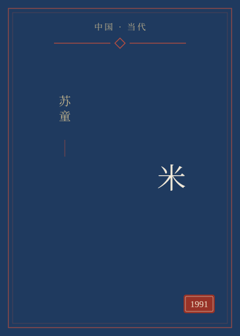
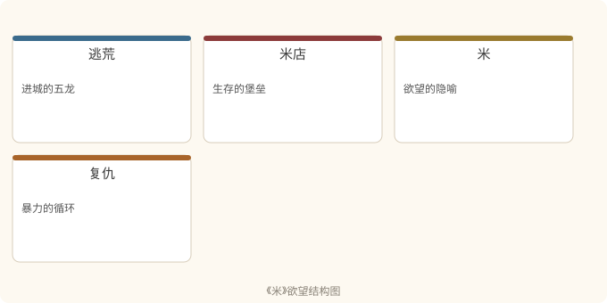

米
一、基本信息
| 作者 | 苏童 |
|---|---|
| 成书/出版 | 出版年份待核（中国作家网 C015：'《米》《我的帝王生涯》《河岸》等长篇'——1991年说通说待核） 《黄雀记》：作为性格悲剧的美学建构（中国作家网）（官方文学机构） |
| 国别/地区 | 中国 |
| 时代 | 现当代 · 当代 |
| 体裁 | 长篇小说 |
| 语言 | 汉语（白话） |

《米》欲望结构图（主题·结构图）
二、创作背景
中国作家网（C015）：'其代表作包括《妻妾成群》《红粉》等中篇，《米》《我的帝王生涯》《河岸》等长篇'——本作为苏童长篇处女作（处女作说通说待核）。
题材（通说待核）：五龙从乡村流民到黑帮'米'的欲望史。
三、内容脉络
逃荒进城的大米梦：五龙在米店的生存与复仇（通说待核）。
'米'的意象：生存的根本与欲望的载体（通说待核）。
四、主要人物表
| 人物 | 身份 | 说明 |
|---|---|---|
| 五龙 | 流民 | 进城者（通说待核） |
| 织云、绮云 | 米店姐妹 | （通说待核） |
五、主题与艺术特点
- 城市的诱惑与堕落（通说）。
- 性、暴力与米的三角（通说）。
- 阴郁的南方叙事（通说）。
六、影响与评论
- 中国作家网：列入苏童长篇代表作（C015）。
《黄雀记》：作为性格悲剧的美学建构（中国作家网）（官方文学机构） - '先锋小说'的长篇转向（通说待核）。
《黄雀记》：作为性格悲剧的美学建构（中国作家网）（官方文学机构）
七、阅读建议
难点
- 残酷描写的接受。
- 米店意象的贯穿。
- 《米》（上海文艺出版社/人民文学出版社版本，通说待核）。
先《妻妾成群》后本作。
八、待核实
- 1991年出版（江苏文艺出版社说）核对。
- 五龙/织云/绮云人名核对。
- '长篇处女作'说待核。
本页主要来源
苏童的其他收录作品：黄雀记